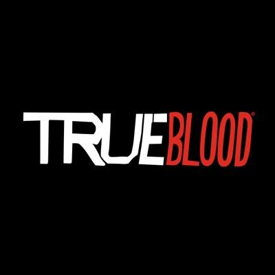
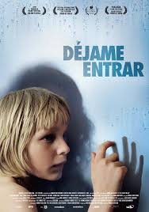

Dragon Age Inquisition

Un cataclismo ha sumido las tierras de Thedas en la confusión. Los Dragones oscurecen los cielos, invocando a
las sombras del terror sobre el reino que en un tiempo fue pacífico. Los Magos inician una guerra sin cuartel
contra los opresivos Templarios. Las naciones se levantan unas contra otras. Depende de ti y de tu grupo de héroes
legendarios restablecer el orden como lider de la inquisición, cazando a los agentes del caos. Los compromisos se construyen
– algunos se rompen - como la campaña por la verdad tiene su precio.
Continuar leyendo
True Blood

True Blood (Sangre fresca en España1 y Sangre verdadera en Hispanoamérica),
2 es una serie de televisión original de HBO creada por Alan Ball, basada en la franquicia The Southern
Vampire Mysteries de Charlaine Harris. Su argumento se centra en un conservador pueblo de Luisiana llamado
Bon Temps, y en cómo su gente debe adaptarse y enfrentarse a los cambios que se han producido en la sociedad
desde que los vampiros salieron a la luz pública y en especial en cómo las criaturas de la noche y su mundo
afectan a la vida de una camarera con poderes telepáticos llamada Sookie Stackhouse (Anna Paquin).
Continuar leyendo
Dejame entrar

Oskar, un tímido niño de doce años, que es acosado en el colegio por sus compañeros,
se hace amigo de Eli, una misteriosa vecina de su edad, cuya llegada al barrio coincide
con una serie de inexplicables muertes. A pesar de que Oskar sospecha que Eli es un vampiro,
intenta que su amistad esté por encima de su miedo.
Continuar leyendo